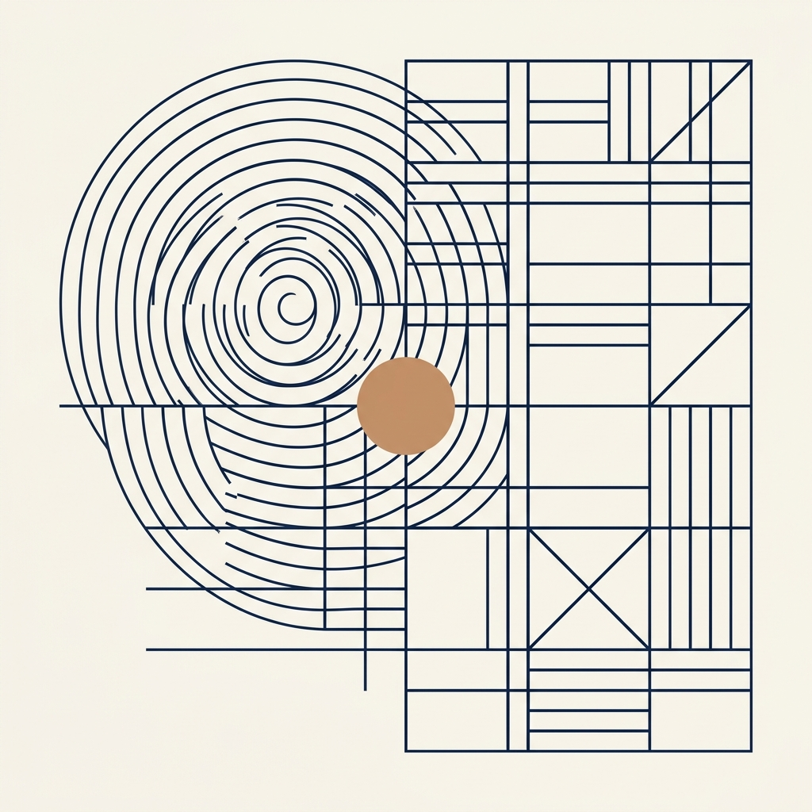
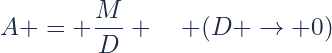
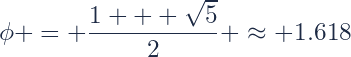
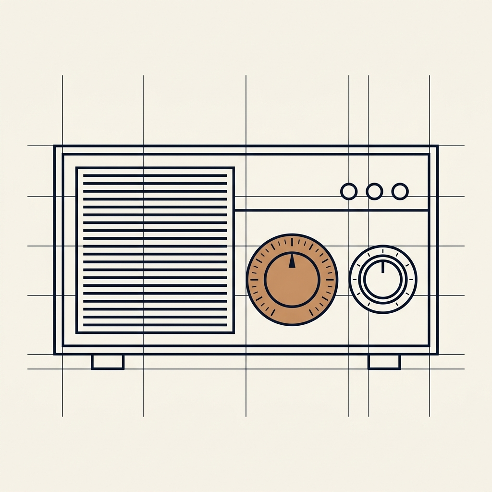

哲学、设计与空白之美
传统的“侘寂”（Wabi-Sabi）哲学，强调空间“无”的无限可能，“空”即是蕴含万物的容器。
20世纪初包豪斯运动打破繁复装饰，将设计拉回到“功能决定形式”（Form follows function）的本质。


越多的空白包围一个视觉元素，该元素就越具吸引力。留白是强烈的无声引导，指明了阅读路径。
慷抑的呼吸感使大脑能够从信息过载中解放，按自然的节奏吸收核心重点，使排版更舒适舒畅。
所有视觉元素必须精准对齐在隐形的水平与垂直轴线上。视觉的简洁正是高度精确秩序的外显。
采用黄金分割率（1:1.618）决定空间留白、模块比例和字号梯度变化，让版面自然折射出经典的美学韵律。

经典黄金分割率比例公式放弃任何冗余的边框或点缀，单靠现代无衬线字体的极致字重差异 (Bold vs Light) 与大尺寸比率拉开视觉层级。
font-family: Arial, "Microsoft YaHei", sans-serif;
技术的发展不断为创新设计提供机会与可能。
产品被使用是为了发挥功能，审美亦服务于实用。
产品的审美品质是其实用性不可分割的一部分。
它能使产品结构清晰，让产品自己开口说话。
产品像工具，它们是履行实用功能的器物。
不以超出产品实际的创新或价值欺骗用户。
避免一时的时髦，即便在快速消费时代也永不过时。
没有任何细节是偶然或随意的，对用户充满尊重。
在整个产品生命周期中保护资源，减少视觉污染。
回归纯粹，回归简单。少却更好。
Weniger, aber besser —— 核心箴言

迪特·拉姆斯为博朗设计的收音机和计算器，其简洁交互、纯物理排布逻辑，深刻影响了乔纳森·伊夫为苹果公司设计的数字硬件与现代智能设备。
无印良品以“空”（Emptiness）的哲学包容万物，依靠留白和天然质朴的材质呈现日常生活用品的本真之美，追求“不浮夸、刚刚好”的生活态度。
页面元素杂乱，平均认知负荷值高达 78，导致首要操作完成率仅有 62%。
逻辑框架清晰，平均认知负荷值降至 35，首要操作完成率提升至 89%。
视觉高度聚焦，平均认知负荷值降至极低的 18，首要操作完成率高达 94%。
极简主义不是失去，而是去除杂质后的丰盈；
在喧嚣的时代，空白即是最大的力量。